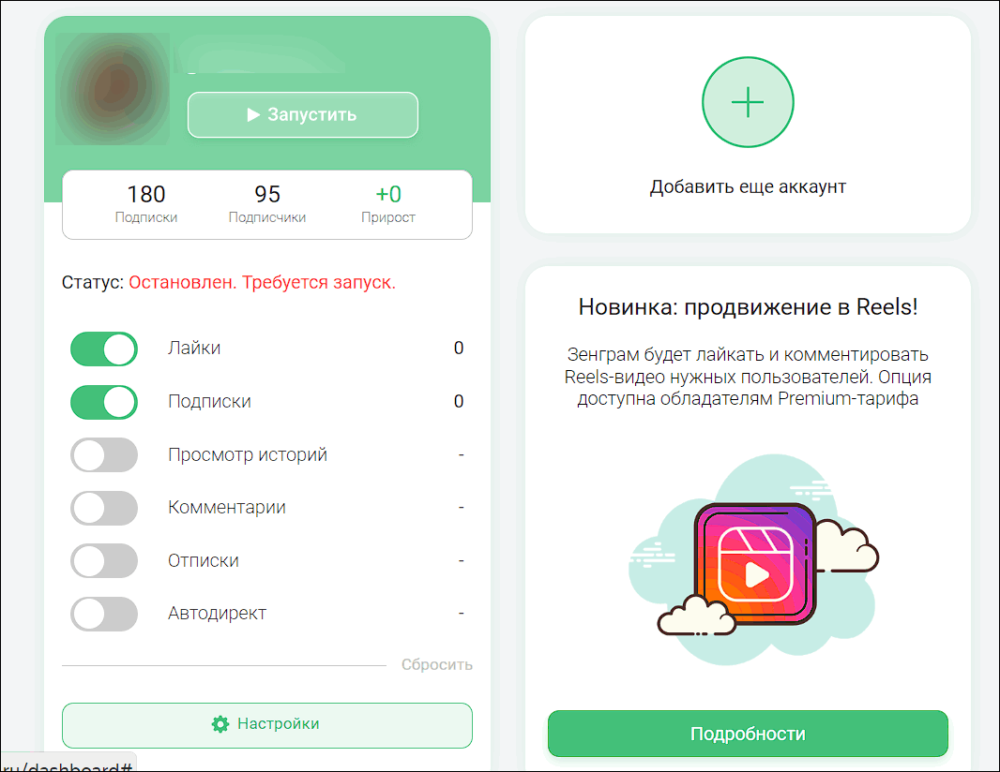
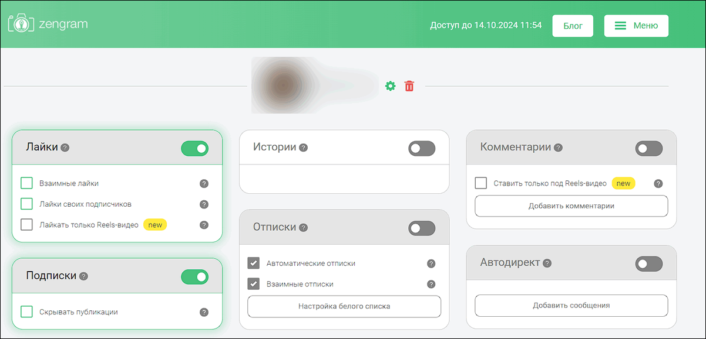
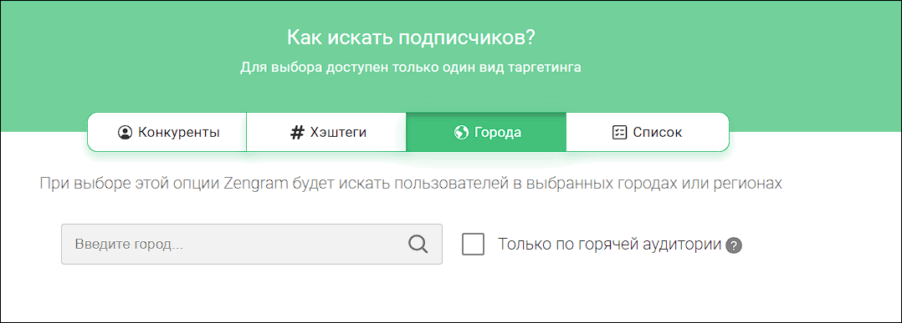
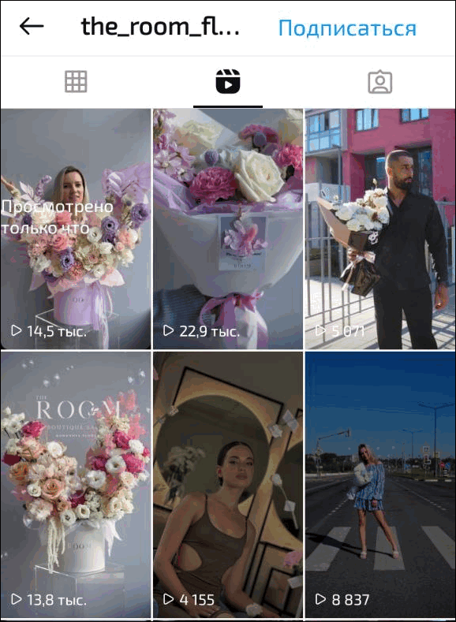
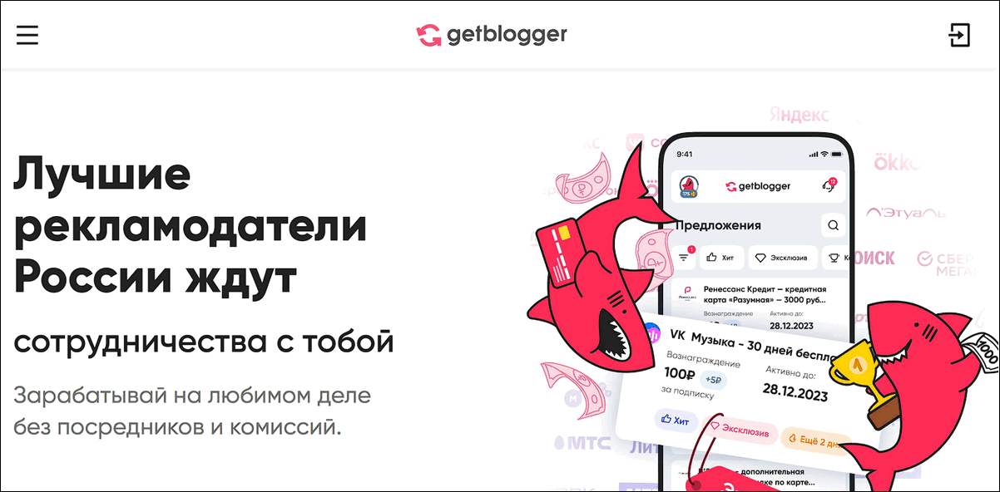
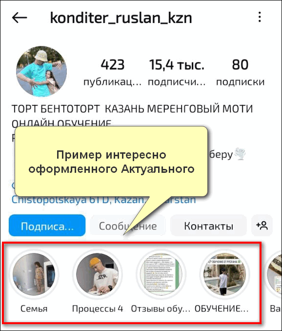

Охваты в Инстаграме: сервисы и способы помогающие увеличить охват

- Коротко об охватах: что это и как работает
- Уровень вовлеченности в Инстаграме*
- ТОП-5 способов увеличить охваты
- №1: Zengram: пробуем и внедряем
- №2 Накрутка через ТГ мини приложения
- №3 Новые публикации и форматы
- №4 Агрессивный контент: стоит ли
- №5 Сотрудничество с другими блогерами
- Используем Сторис и Актуальное для охватов
- Как увеличить охваты в новом профиле
Увеличение охватов в Инстаграме* - основная и часто возникающая проблема у блогеров. Это показатель, отображающий количество посещений, заинтересованность потенциальной аудитории и количество страниц, которым был рекомендован пост, аккаунт.
Коротко об охватах: что это и как работает
Охват учитывает количество уникальных пользователей, посетивших страницу или увидевших публикацию. В социальной сети представлено в виде двух показателей: отдельным записям или Сторис и по всему профилю. Охваты необходимы для оценки эффективности контента: был ли он интересен, какой процент потенциальной аудитории пришло.
✅У охвата есть разновидности:
- естественный. Тот, который был получен от посещений потенциальной аудитории без применения дополнительных инструментов;
- рекламный. Если владельцем страницы была запущена промоакция или накрутка.
Также есть:
- ежедневный;
- суммарный (общее количество пользователей, которые увидели пост;
- подписанных и неподписанных.
Подключив бизнес-статус или аккаунт «Автора», владелец страницы сможет ежедневно просматривать какое количество уникальных посетителей посмотрели запись. То же касается и раздела: «Аналитика», где продемонстрированы суммарные показатели и суточные. Если у вас более 100 подписчиков, то Инстаграм* отобразит полные данные относительно посещений, действий на странице.
Уровень вовлеченности в Инстаграме*
ER или engagement rate – показатель, отображающий число взаимодействий относительно количества зрителей или подписчиков. Предположим, что на странице блогера более 10 000 фолловеров и всего 5-10 комментариев под публикациями. Путем нехитрых вычислений можно выяснить, что такой процент взаимодействия низкий и не соответствует количеству посетителей, подписчиков. Метод определения вовлеченность поможет определить, есть ли у ваших конкурентов постоянная накрутка.
Чтобы рассчитать в своем профиле, нужно использовать формулу: (Количество действий / на количество подписчиков) * 100%.
А что если у конкурента не равномерное число действий? Нужно взять пять последних постов, высчитать среднее значение и согласно нему подставлять в формулу. Для того, чтобы не считать охваты и вовлеченность вручную, можно использовать сервис аналитики и управления соцсетями LiveDune. Проанализируйте аккаунты конкурентов и найдите идеи для контента, который пользуется наибольшей популярностью у аудитории. На своем профиле это также стоит проверить, чтобы убедиться в выборе правильной стратегии для продвижения. И кроме повышения охватов, в случае с низкой вовлеченностью, придется повышать качество контента, повышать уровень доверия и формировать базовую обратную связь.
ТОП-5 способов увеличить охваты
Низкие охваты - это серьезная проблема не только для недавно появившегося блога, а и активно развивающегося. То есть, посещаемость и читаемость страницы может внезапно снизиться (после какой-то публикации, невовремя опубликованного видео или негативного комментария). И чтобы её повысить, можно использовать не только новый график для размещения постов, но и платные: накрутка через ботов, сервисы. Все способы, как увеличить охваты:
- через накрутку;
- с помощью привлечения реальных пользователей на биржах или сайтах;
- сотрудничество в другими блогерами;
- размещение агрессивного контента или провокационного;
- новые форматы и участие в трендах.
Запуская новый блог, автор должен запомнить: регулярное размещение Историй с полезным содержанием – залог успеха. Последние тренды социальной сети говорят о том, что забивать все «эфирное время» Сторис не нужно – половина из них не просматриваемы, но делиться чем-то занятным вполне актуально. Что такое ER и вовлеченность в Инстаграме*: как рассчитать и работать с ней - узнайте в нашей статье.
№1: Zengram: пробуем и внедряем
Сервис для увеличения охватов в Инстаграме*, которому можно и стоит доверять – Zengram. В его функции входит проверка страницы на наличие бот-активности, спам. Также есть накрутка по географическим параметрам, половой принадлежности. Чтобы запустить накрутку в сервисе, нужно:
- Авторизоваться в сервисе и перейти к добавлению учетной записи.
- Указать свой никнейм от Инстаграма* - подождать, пока загрузится страница.

Выбрать вкладку: «Продвижение» - указать критерии и перейти к «Настройкам».
- Указать, как искать потенциальную аудиторию, что нужно исключать при подборе.

В Зенграме есть пункты поиска:
- города;
- хештеги;
- конкуренты;
- количество подписок и подписчиков.
Сервис создает базу потенциальной аудитории, где также можно выбирать тип аккаунта: личный и коммерческий. На эту базу можно сделать рассылку или оформить взаимную подписку. Функция «Рассылки» доступна во вкладке «Настройки», где и можно отобрать аудиторию.
№2 Накрутка через ТГ мини приложения
Боты в Телеграме – просто вариант, как быстро собрать подписчиков. Накрутка включает варианты: добавлять ботов, реальных пользователей, отобрать по странам. Не требует установки и дополнительной регистрации, так как работает напрямую через аккаунт в Телеграме. 🔽Примеры полезных ботов:
Чтобы воспользоваться их услугами, нужно перейти в бот с мобильного устройства или ПК, выбрать тип накрутки и параметры. Например, указать что потенциальная аудитория должна быть исключено из СНГ, с реальными фото и подписчиками. Такая публика стоит дороже, но эффективнее в продвижении: нередко они становятся активными подписчиками. В мини-приложениях вы найдете разные типы продвижения: от отдельных лайков на публикации до комплексных услуг. В последние входит накрутка лайков, комментариев, подписчиков, репосты. Все это влияет на вывод записей в ТОП и соответственно – получение повышенных охватов.
№3 Новые публикации и форматы
Объективно стандартный способ увеличение охватов – регулярность размещения новых постов и тестирование форматов. Допустим, вы пренебрегаете Рилс и редко их записываете, а ведь это именно тот раздел, который нужно задействовать при продвижении бизнеса или личного бренда, активнее всего. В Reels автор найдет список популярных треков и тех, которые только набирают популярность. Он считается более просматриваемым даже чем Сторис.

Чтобы увеличить охваты, нужно:- регулярно размещать новые публикации. Вы можете ввести собственные традиции: «пятничный_отдых», «понедельник_на_драйве» и в этот день публиковать записи, которые будут касаться именно этого дня. Это могут быть как интересные истории, так и размышления о предстоящих делах;
- публикуйте Истории для прогрева, но не забрасывайте ими подписчиков. Оптимальное количество Сторис для небольшого блога – не более 10 в сутки, если число подписчиков свыше 50 000 – до 20. Также учитывайте тип вашего аккаунта: если это магазин, то не размещайте фотографию каждого товара отдельно, создавая целую серию однотипных Историй;
- используйте мобильные приложения для создания креативного контента. Это проще, чем работать на стационарных программах на компьютере или ноутбуке. К тому же, большинство приложений как CapCut или Funimate включают каталог с шаблонами, искусственный интеллект, которые помогут в быстром редактировании и повышении качества видеоклипов, фотографий.
Например, через Funimate можно создать видеоклипы в расширении 8К и улучшить качество. Там же есть отдельные шаблоны для социальных сетей.
И с помощью мобильных приложений, креативных идей можно пробовать новые форматы, внедрять тренды в свой бизнес.
№4 Агрессивный контент: стоит ли
Агрессивный контент тот, который вызовет у аудитории вопросы, положительную или негативную реакцию. То есть, этот тот же кликбейт, но уже в качестве полноценной истории. Например, вы можете записать трендовое видео, которое совершенно не относится к вашей жизненной ситуации. ⏩В Инстаграме*, активно просматриваемыми темами с агрессивным контентом являются видео:
- конфликтные ситуации с клиентами;
- «завышенное мнение» эксперта или мастера. «Представляете, ко мне обратилась женщина, желающая купить мой курс всего 10 000. Я так дешево не работаю» и другие подобные;
- экстремальные ситуации;
- разбор громких происшествий в мире, стране или городе.
Допустим, многие блогеры не стесняются разбирать криминальные истории, добавляя тем новых подробностей и излишней напыщенности. И такие ролики просматриваемы, даже если разбиты на несколько сюжетов. У такого способа есть существенный недостаток: после активности и негативных комментариев может уйти основная аудитория. Но это вариант, как быстро получить новых подписчиков и даже клиентов. Поэтому выбирая агрессивный контент как один из способов продвижения, нужно подготовиться к рискам.
№5 Сотрудничество с другими блогерами
Простой и одновременно затратный вариант – сотрудничество с другими блогерами. Вам нужно найти тех, кто соответствует вам по количеству подписчиков (или слегка больше), обладает похожей активностью и тематикой. В этом случае сотрудничество можно организовать по системе «взаимного пиара». В остальных же, придется оплачивать рекламное место и мириться с тем, что вы можете быть не первыми в списке.

Если искать через Инстаграм* долгая и неинтересная задача – воспользуйтесь биржами блогеров. Например, EPICStars или GetBlogger, где можно отыскать исполнителя в любой социальной сети и тут же посмотреть статистику, портфолио, выбрать по ценовой категории.Используем Сторис и Актуальное для охватов
Регулярное обновление Историй и Актуального помогут в продвижении. В Хайлайтс нужно загружать только интересное и полезное, сортируя все предыдущее Сторис. Вы можете делать отсылки в публикациях, видео и Историях на определенное «Актуальное», чтобы сделать этот раздел более просматриваемым.

Предположим, что у вас есть ситуация, которую можно использовать в бизнесе в качестве «визитной карточки»: вы с легкостью решили конфликт с покупателем или были прорекомендованы популярным блогером, медийной личностью. Из Сторис, записанных в этот день, можно составить интересный Хайлайтс с соответствующим названием. Но даже, если в этот день не было записей в коротких Историях, можно сделать их после события. Вы создаете новый пост, где указываете: «Скоро расскажу что-то интересное» и постепенно выкладываете Истории с описанием ситуации (желательно скриншотами, фотографиями). Далее, это же отправляется в Актуальное.Как увеличить охваты в новом профиле
Новый профиль – это чистый лист, где стоит задействовать любые способы продвижения. Вы можете пойти по пути естественного привлечения подписчиков или же сразу накрутить. Но я настоятельно рекомендую изначально заполнить профиль полезной информацией, получить первую сотню фанатов, а уже после запускать платную рекламу или накрутку. Это связано с такими фактами:
- Инстаграм* блокирует автоматизированные действия и аккаунты;
- первый месяц за страницей пристальное наблюдение от администрации. Чтобы исключить массовой генерации ботов;
- чем больше естественно привлеченных подписчиков, тем быстрее записи начнут выходить в Рекомендации.
Поэтому, чтобы сразу увеличить охваты и получить первую аудиторию, нужно использовать основные разделы, участвовать в трендах, использовать геометки и хештеги. Особенно, если ваш бизнес связан с определенным городом или нет доставки по другим странам.